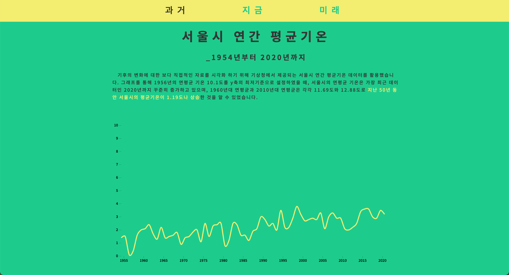

E-day
#environmental issue #climate action
data visualization, Louvain algorithm, 2020
About
The theme of the “most important team” in the DSC Korea Solution Challenge
Hackathon 2021 is Solution Challenge No. 13, climate action based on data visualization, deep learning modeling,
and web implementation. Climate change is an important issue for us, but with an emphasis on the fact that it
is considered abstract and vague, we have tried to present specific figures compared to the current temperature,
focusing on it right now. In addition, data on the increase in temperature and greenhouse gas due to global
warming can be easily understood by the general public by visually explaining the invisible virus for the corona,
which is the biggest problem in the present era, through a visual chart. I tried to help people understand
intuitively by visualizing them. Finally, I thought that it would be convincing to protect the environment
by presenting predictions based on historical data.
Member
Minsik Choi
Bogeum Kim
Sehyun Jeon
Nayeon Kim
Bogeum Kim
Sehyun Jeon
Nayeon Kim


👉🏻 website